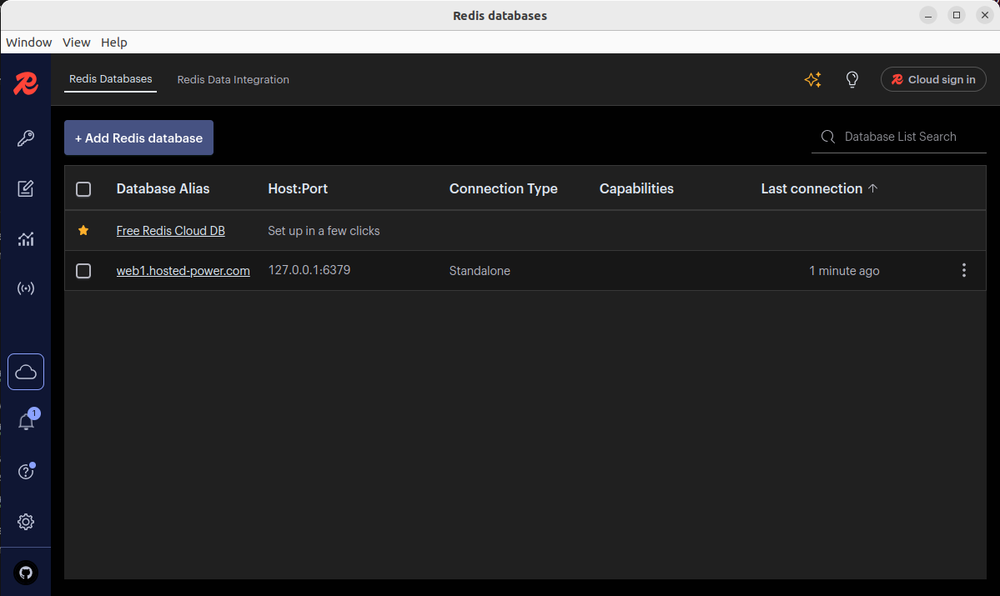
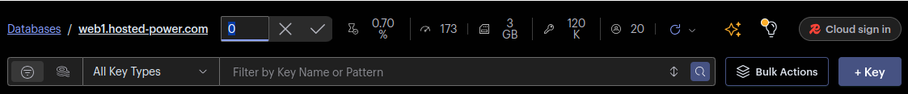
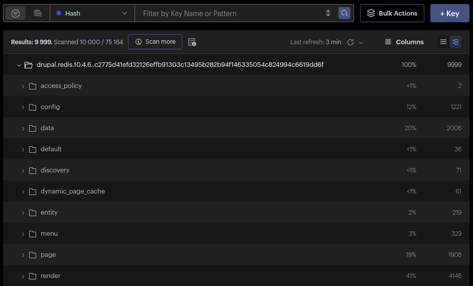
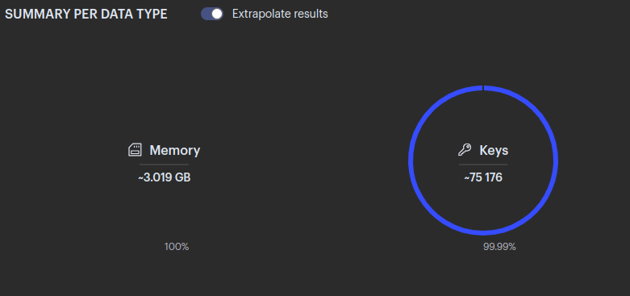
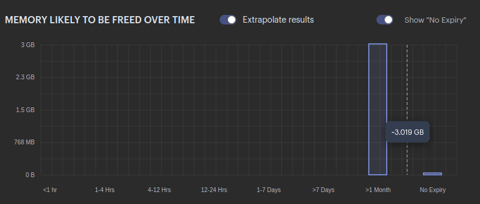

Redis Insight Guide
Redis Insight is the GUI that makes analyzing data in Redis much easier. This is especially useful when customers store large volumes of data.

How to Use Redis Insight
-
Click "Add Redis Database"
-
Enter the following information:
- Database Alias: Hostname of the server
- Port: 6379 (caching) or 6378 (persistent)
Under Security:
- USE SSH TUNNEL
- Host: IP
- Port: 22
- Username: TS username (from credentials)
- Password: Password for TS user
-
Click the DB alias to connect to the server.
Note: For this to work, authentication with a password must be enabled.
-
Select the database you want to analyze.
These can be identified through:- Our monitoring (look under 'Redis-default-memory' check)
- Or with the command:
redis-cli info keyspace
By default, the database is set to
0. You can change this at the top of the program.
-
Manually browse the keys
See which key types expire and when.
-
Use the analysis tool from the left-hand menu
This is the most useful feature. After generating a report, you'll be able to see:- Total memory used
- Total number of keys
- Top 15 keys (sortable by TTL)
- Most used key types and their memory usage
- Size of expiring and non-expiring keys

